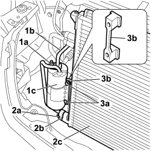
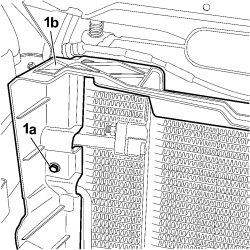
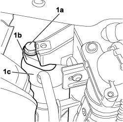
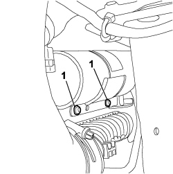
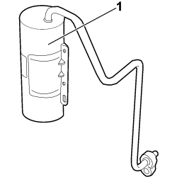
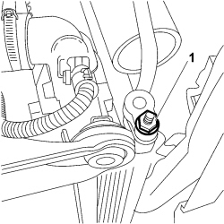
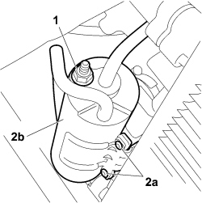

5040A44 AIR CONDITIONING DRIER FILTER/ACCUMULATOR - R+R
- Path
- Procedures > 50 AUXILIARY UNITS > 5040 AIR CONDITIONING CASING AND COMPONENTS > 5040A AIR CONDITIONING REFRIGERANT CIRCUIT > 5040A44 AIR CONDITIONING DRIER FILTER/ACCUMULATOR - R+R
- Kind
- repair procedure (removal / refitting; the operation number is the code)
- Applies to
- engines: 1.8, 2.2, 2.4 JTD 20v; all production periods
- Interactive page
- https://sloeber94.github.io/elrnDB-fCrm/en/#/194000604
Applies to: engines: 2.2; all production periods
 Removing
Removing
 Refitting
Refitting- Turn the ignition key to the OFF position.
- Disconnect the negative battery terminal.
Description | Connector | |
|---|---|---|
BATTERY |
Op. 0010T84 COOLANT FOR AIR CONDITIONING SYSTEM - DEHYDRATE AND REPRESSURIZE
Op. 7040D30 ENGINE BAY FRONT BEAM COVER - R R
1. Unscrew nut (1a) securing the joint on connection pipe (1b) to the dehydrataing filter (1c).
2. Unscrew nut (2a) securing the joint on pipe (2b) connecting the dehydrataing filter to the condenser (2c).
3. Undo both bolts (3a) securing the dehydrating filter, recover the rear plate (3b) and remove from the condenser.

Applies to: engines: 2.2; all production periods
Refitting
Removing- Check that the dehydrating filter and the plate are not damaged.
- Position the dehydrating filter and the plate on the condenser, tighten both bolts to the condenser.
- Tighten the nut fastening the joint of the pipe connecting the dehydrating filter to the condenser and tighten to the specified torque.
Component | Fastening | dia | Value (daNm) | Validity |
|---|---|---|---|---|
AIR CONDITIONING PIPE TO CONDENSER | Nut | 1.6 ÷ 2.4 | 1.8 16v |
- Tighten the nut fastening the joint of the dehydrating filter connection pipe and tighten to the specified torque.
Component | Fastening | dia | Value (daNm) | Validity |
|---|---|---|---|---|
AIR CONDITIONING PIPE TO CONDENSER | Nut | 1.6 ÷ 2.4 | 1.8 16v |
Op. 7040D30 ENGINE BAY FRONT BEAM COVER - R R
Op. 0010T84 COOLANT FOR AIR CONDITIONING SYSTEM - DEHYDRATE AND REPRESSURIZE
- Reconnect the negative battery terminal.
Description | Connector | |
|---|---|---|
BATTERY |
Applies to: engines: 2.4 JTD 20v; all production periods
Removing
Refitting- Turn the ignition key to the OFF position.
- Disconnect the negative battery terminal.
Description | Connector | |
|---|---|---|
BATTERY |
Op. 0010T84 COOLANT FOR AIR CONDITIONING SYSTEM - DEHYDRATE AND REPRESSURIZE
Op. 1048A42 SLEEVE FROM FLOW METER TO TURBO CHARGER AIR INLET PIPE - R + R
Op. 7040D30 ENGINE BAY FRONT BEAM COVER - R R
Op. 7055A43 CENTRE FRONT GRILLE - R.R.
1. Undo the nut (1a) fixing the lower connecting pipe (1b) to the condenser (1c).

Applies to: engines: 2.4 JTD 20v; all production periods
1. Undo the upper bolts (1a) securing the air duct (1b) without removing it.

Applies to: engines: 2.4 JTD 20v; all production periods
1. Undo the bolt (1a) fixing the pipe coupling (1b) from the drier filter (1c) to the evaporator inlet pipe. Release the coupling from its housing.

Applies to: engines: 2.4 JTD 20v; all production periods
- Position the vehicle on the lift and raise it.
1. Working underneath the vehicle, undo the bolts (1a) securing the front protection under the engine (1b) to the bumper lining and remove the front protection under the engine.

Applies to: engines: 2.4 JTD 20v; all production periods
1. Undo the bolts fixing the drier filter.

Applies to: engines: 2.4 JTD 20v; all production periods
1. Remove the drier filter from the vehicle.

Applies to: engines: 2.4 JTD 20v; all production periods
Refitting
Removing- Check that the drier filter and the plate are not damaged.
- Place the drier filter in its housing and tighten the fixing bolts.
- Tighten the bolts fixing the front protection under the engine to the bumper trim.
- Lower the lift.
- Screw in the bolt fixing the coupling for the pipe from the drier filter to the evaporator inlet pipe and tighten it to the recommended torque.
Component | Fastening | dia | Value (daNm) | Validity |
|---|---|---|---|---|
PIPE FROM DRIER FILTER TO SECTION ON DRIER FILTER | Bolt | M8 | 1,8 ÷ 2,0 | 2.4 jtd |
- Tighten the nut fixing the lower connector pipe to the condenser.
- Tighten the upper bolts fixing the air duct.
Op. 7055A43 CENTRE FRONT GRILLE - R.R.
Op. 7040D30 ENGINE BAY FRONT BEAM COVER - R R
Op. 1048A42 SLEEVE FROM FLOW METER TO TURBO CHARGER AIR INLET PIPE - R + R
Op. 0010T84 COOLANT FOR AIR CONDITIONING SYSTEM - DEHYDRATE AND REPRESSURIZE
- Connect the negative battery terminal.
Description | Connector | |
|---|---|---|
BATTERY |
Applies to: engines: 1.8; all production periods
Removing
Refitting- Follow the safety instructions
- Turn the ignition key to the OFF position.
- Disconnect the negative battery terminal.
Description | Connector | |
|---|---|---|
- | BATTERY |
Op. 0010T84 COOLANT FOR AIR CONDITIONING SYSTEM - DEHYDRATE AND REPRESSURIZE
Op. 7040D30 ENGINE BAY FRONT BEAM COVER - R R
1. Loosen the nut fixing the pipe to the condenser.

Applies to: engines: 1.8; all production periods
1. Loosen the nut fixing the pipe to the drier filter.
2. Unscrew bolts (2a) securing drier filter (2b) to the condenser and remove.

Applies to: engines: 1.8; all production periods
Refitting
Removing- Place the drier filter on the condenser, tighten both bolts and the nut to the specified torque.
Component | Fastening | dia | Value (daNm) | Validity |
|---|---|---|---|---|
DRIER FILTER | Nut | 1.6 ÷ 2.4 | 1.8 16v |
- Position the condenser with drier filter in its seat and tighten the bolts on both sides.
- Connect the high pressure pipe from the drier filter, screw in the nut and tighten to the recommended torque.
Component | Fastening | dia | Value (daNm) | Validity |
|---|---|---|---|---|
HIGH PRESSURE PIPE | Nut | 1.6 ÷ 2.4 | 1.8 16v |
Op. 7040D30 ENGINE BAY FRONT BEAM COVER - R R
Op. 0010T84 COOLANT FOR AIR CONDITIONING SYSTEM - DEHYDRATE AND REPRESSURIZE
- Connect the negative battery terminal.
Description | Connector | |
|---|---|---|
- | BATTERY |
Topics linked from this page (7)
- 0010T84 COOLANT FOR AIR CONDITIONING SYSTEM - DEHYDRATE AND REPRESSURIZE
- 1048A42 SLEEVE FROM FLOW METER TO TURBO CHARGER AIR INLET PIPE - R + R
- 5040 AIR CONDITIONING CASING AND COMPONENTS
- 7040D30 ENGINE BAY FRONT BEAM COVER - R R
- 7055A43 CENTRE FRONT GRILLE - R.R.
- 7210E10 R.R. FRONT BUMPER
- A001 BATTERY